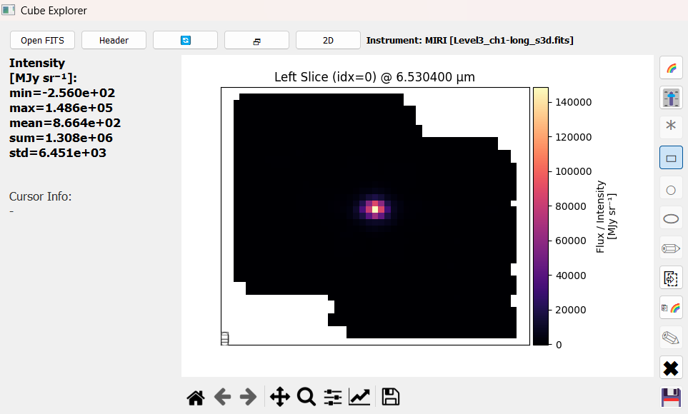
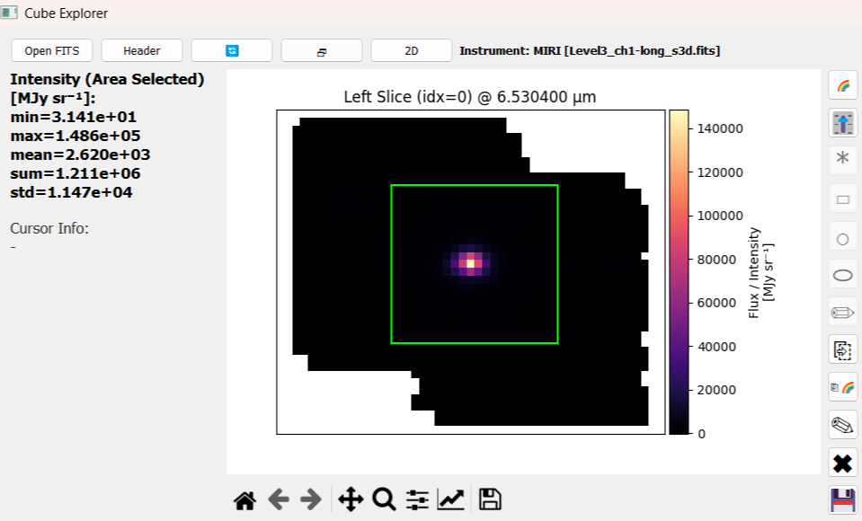
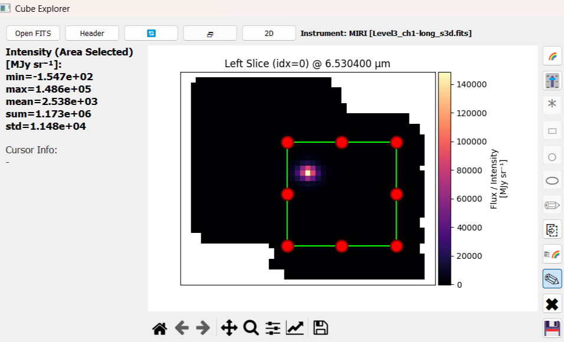
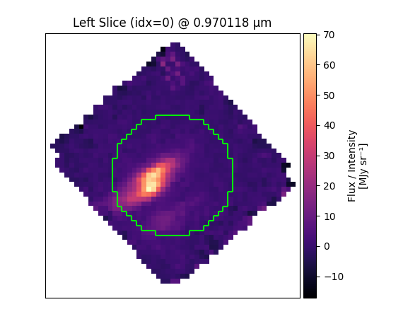
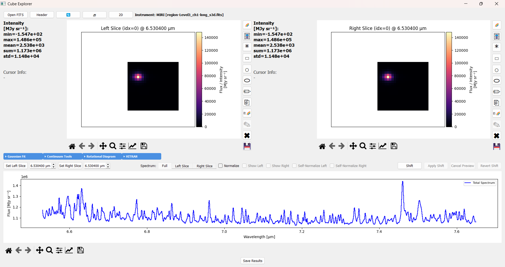

Selecting Regions
Learn how to select areas of interest in your data cube for analysis.
Region Selection Tools
IFU Analyzer provides five selection tools for different use cases:
Tool |
Best For |
|---|---|
* Point |
Single pixels or precise locations |
▭ Rectangle |
Rectangular areas, embedded sources |
○ Circle |
Circular features |
⬭ Ellipse |
Elongated structures, galaxies |
✏ Freehand |
Precise manual outlines |
Five more buttons sit alongside them in each slice’s toolbar:
Button |
Purpose |
|---|---|
✎ Edit Shape |
Toggle drag/resize of the placed region |
✖ Clear |
Remove the region and start over |
⎘ Copy |
Copy the selection to the other slice |
⎘🌈 Copy Color |
Copy this slice’s colormap to the other slice |
💾 Export |
Save the region (or a Point) as a NaN-masked cube |
How Region Selection Works
Selection follows a strict order of operations, and each slice tracks its own state independently. Only one region per slice can exist at a time.
Choose a shape. All five shape buttons are available. Click one to arm it.
Draw the region. Only the armed shape stays clickable; click it again to cancel. The region is placed when you release the mouse.

Region placed. The shape buttons are now disabled. This is deliberate: you cannot start a second region while one exists. The stats panel switches to Intensity (Area Selected) for the region.

Edit if needed. Toggle ✎ to drag or resize. Toggle it off again to commit the change.
Clear before drawing again. Press ✖ to remove the region. The shape buttons become available again.
Note
If the shape buttons look greyed out, a region is already placed on that slice. Press ✖ to clear it before selecting a new one.
Editing a Placed Region
✎ is a toggle, and it only becomes available once a region has been placed.
Toggle on: handles appear; drag to move or resize
Toggle off: the edit is committed and handles are removed

Editing is deliberately opt-in rather than always-on, so a region cannot be nudged out of place by an accidental click while you are working with the spectrum.
Note
✎ is not available for Point selections, since a single pixel has nothing to resize. Clear it and place a new point instead.
Using the Tools
Point Select
Click * in the slice toolbar
Click a pixel location
Rectangle, Circle and Ellipse Select
Click ▭, ○, or ⬭ in the slice toolbar
Press and hold at one corner
Drag to the opposite corner
Release to place the region
To adjust it afterwards, toggle ✎ and drag the handles:
Drag edge: resize in one dimension
Drag corner: resize in two dimensions
Drag interior: move the whole region


Circle select. Any pixel the shape touches at all is included, not just pixels whose center falls inside it – edges look pixelated rather than smooth, but that pixelation shows exactly what’s being summed into the region’s stats and spectrum.
Freehand Select
Click ✏ in the slice toolbar
Draw a closed outline around the feature
Release to place the region
Tips for freehand:
Make closed figures
Keep the outline inside the slice boundaries
Statistics
Mean: Central values
Std: Spread
Min/Max: Range
Sum: Total
Each Region Gets Its Own Spectrum
Selecting a region does more than update the Intensity (Area Selected) stats; it also populates that side’s own tab in the Spectrum Panel below.
Full tab: always shows the whole cube’s summed spectrum, regardless of any regions selected.
Left Slice / Right Slice tabs: show only that side’s own selected region’s spectrum. Empty until a region is selected on that side, and replaced (not blended) if you draw a new one.
Show Left / Show Right: while viewing the Full tab, overlay the Left/Right region’s spectrum on top of Full for direct comparison, instead of switching away from it.
Note
A region’s spectrum is scaled by its pixel count to stay on the same absolute scale as Full’s summed spectrum, so it’s a like-for-like comparison, not a per-pixel average.
For normalizing or Doppler-shifting these spectra once you have them, see Spectrum Display.
Exporting a Region as a Cube
Once a region – or a single Point – is placed, 💾 saves a copy of the loaded cube to a new FITS file with every spaxel outside it set to NaN. A Point selection works too: the exported cube keeps just that one spaxel, everything else NaN. Shape and WCS are unchanged either way, so the file reloads normally and a plain sum over it reproduces the region’s (or single pixel’s) own spectrum exactly.


Reopening an exported region cube: the instrument label reads
region-Level3_ch1-long_s3d.fits – everything outside the original region is NaN,
everything inside is untouched.
This is useful for handing just one region’s data to another tool (Flux Map, Rotational Diagram Map) without it seeing the rest of the cube, or for sharing one source’s data without the surrounding field.
💾 stays disabled until something – a region or a Point – is placed, and disables again after clearing it with ✖.
Using the API
Region extraction is available without the GUI, using the same
extract_pixel_spectrum() and
extract_region_spectrum() calls the GUI itself uses
for pixel clicks and region selections. Prefer these over indexing
cube.cube by hand: extract_region_spectrum excludes NaN pixels from
each wavelength’s mean rather than letting one bad pixel propagate NaN into
the whole region’s spectrum, and it accepts any boolean mask shape, so the
same call reproduces a Rectangle, Circle, Ellipse, or Freehand selection –
not just a rectangular slice.
Extract Spectra from Specific Regions
import numpy as np
from cube_explorer.api import load_cube, extract_pixel_spectrum, extract_region_spectrum
cube = load_cube("data.fits")
# Extract spectrum from a single pixel (equivalent to the Point tool)
x, y = 20, 25
pixel_spectrum = extract_pixel_spectrum(cube, x, y)
# Extract spectrum from a spatial region (equivalent to the Rectangle tool)
x_start, x_end = 10, 30
y_start, y_end = 15, 35
mask = np.zeros(cube.cube.shape[1:], dtype=bool)
mask[y_start:y_end, x_start:x_end] = True
averaged_spectrum = extract_region_spectrum(cube, mask)
# Plot the spectrum
import matplotlib.pyplot as plt
plt.figure(figsize=(12, 6))
plt.plot(cube.wavelength, averaged_spectrum, 'b-', linewidth=1)
plt.xlabel('Wavelength (µm)')
plt.ylabel('Flux')
plt.title(f'Spectrum: pixels [{x_start}:{x_end}, {y_start}:{y_end}]')
plt.grid(True, alpha=0.3)
plt.show()
Next Steps
After selecting regions:
1D Spectrum Fitting to analyze profiles
Continuum Subtraction to remove baselines
Exporting Data to save results